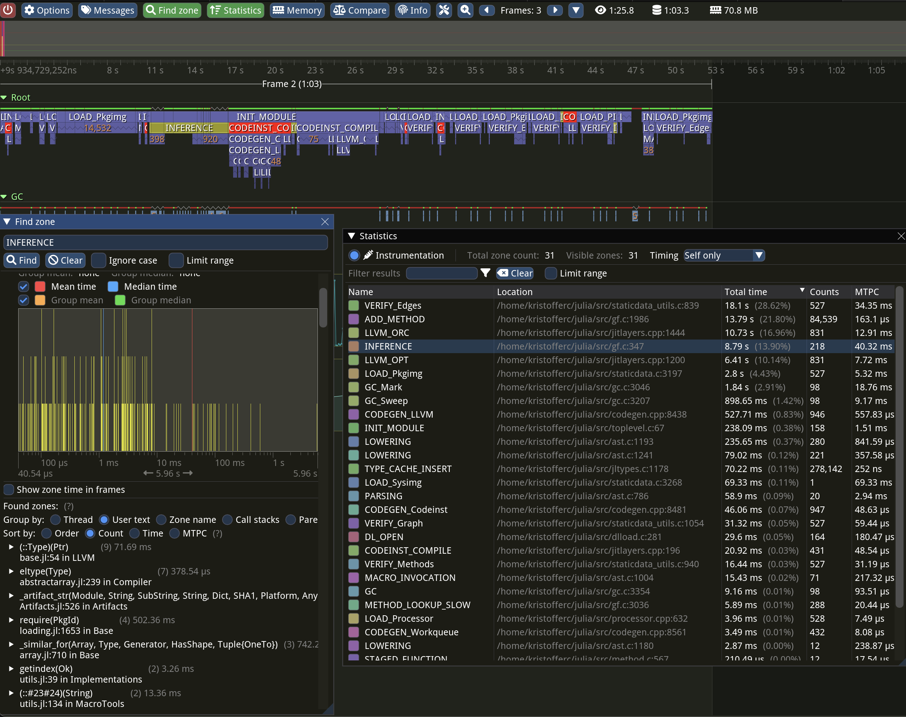

External Profiler Support
Julia provides explicit support for some external tracing profilers, enabling you to obtain a high-level overview of the runtime's execution behavior.
The currently supported profilers are:
Adding New Zones
To add new zones, use the JL_TIMING macro. You can find numerous examples throughout the codebase by searching for JL_TIMING. To add a new type of zone you add it to JL_TIMING_OWNERS (and possibly JL_TIMING_EVENTS).
Dynamically Enabling and Disabling Zones
The JULIA_TIMING_SUBSYSTEMS environment variable allows you to enable or disable zones for a specific Julia run. For instance, setting the variable to +GC,-INFERENCE will enable the GC zones and disable the INFERENCE zones.
Tracy Profiler
Tracy is a flexible profiler that can be optionally integrated with Julia.
A typical Tracy session might look like this:

Building Julia with Tracy
To enable Tracy integration, build Julia with the extra option WITH_TRACY=1 in the Make.user file.
Installing the Tracy Profile Viewer
The easiest way to obtain the profile viewer is by adding the TracyProfiler_jll package and launching the profiler with:
run(TracyProfiler_jll.tracy())On macOS, you may want to set the TRACY_DPI_SCALE environment variable to 1.0 if the UI elements in the profiler appear excessively large.
To run a "headless" instance that saves the trace to disk, use TracyProfiler_jll.capture() -o mytracefile.tracy instead.
For information on using the Tracy UI, refer to the Tracy manual.
Profiling Julia with Tracy
A typical workflow for profiling Julia with Tracy involves starting Julia using:
JULIA_WAIT_FOR_TRACY=1 ./julia -e '...'The environment variable ensures that Julia waits until it has successfully connected to the Tracy profiler before continuing execution. Afterward, use the Tracy profiler UI, click Connect, and Julia execution should resume and profiling should start.
Profiling package precompilation with Tracy
To profile a package precompilation process it is easiest to explicitly call into Base.compilecache with the package you want to precompile:
pkg = Base.identify_package("SparseArrays")
withenv("JULIA_WAIT_FOR_TRACY" => 1, "TRACY_PORT" => 9001) do
Base.compilecache(pkg)
endHere, we use a custom port for tracy which makes it easier to find the correct client in the Tracy UI to connect to.
Adding metadata to zones
The various jl_timing_show_* and jl_timing_printf functions can be used to attach a string (or strings) to a zone. For example, the trace zone for inference shows the method instance that is being inferred.
The TracyCZoneColor function can be used to set the color of a certain zone. Search through the codebase to see how it is used.
Viewing Tracy files in your browser
Visit https://topolarity.github.io/trace-viewer/ for an (experimental) web viewer for Tracy traces.
You can open a local .tracy file or provide a URL from the web (e.g. a file in a Github repo). If you load a trace file from the web, you can also share the page URL directly with others, enabling them to view the same trace.
Enabling stack trace samples
To enable call stack sampling in Tracy, build Julia with these options in your Make.user file:
WITH_TRACY := 1
WITH_TRACY_CALLSTACKS := 1
USE_BINARYBUILDER_LIBTRACYCLIENT := 0You may also need to run make -C deps clean-libtracyclient to force a re-build of Tracy.
This feature has a significant impact on trace size and profiling overhead, so it is recommended to leave call stack sampling off when possible, especially if you intend to share your trace files online.
Note that the Julia JIT runtime does not yet have integration for Tracy's symbolification, so Julia functions will typically be unknown in these stack traces.
Intel VTune (ITTAPI) Profiler
This section is yet to be written.